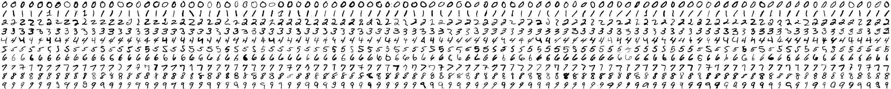

Úlohy můžete řešit v libovolném pořadí a
samozřejmě je nemusíte vyřešit všechny. Za každou úlohu můžete dostat
maximálně 10 bodů, z nichž je většinou 9 bodů vyhrazeno na ohodnocení
funkčnosti programu, jeho shody se zadáním a efektivity a jeden bod na
dokumentaci a přehlednost zdrojového kódu (vhodné členění zdrojového
kódu, vhodně zvolené názvy identifikátorů, komentáře na místech, kde
je to potřeba, atd.). Body získané za každou úlohu se ještě násobí
koeficientem, který odráží složitost úlohy.
Na řešení úloh máte 4 hodiny čistého
času.
Před zahájením soutěže vám pořadatel
oznámí, kde najdete testovací soubory a kam máte ukládat řešení úloh.
Zobrazení rezistorů
Koeficient 1
Prokop dostal k Vánocům arduino se spoustou součástek a návodů na zapojení.
Ihned se chtěl pustit do práce, ale všiml si, že zatímco v návodech jsou
hodnoty rezistorů uváděny číselně. On má jen jakési válečky
s barevnými proužky. Neváhal a na wikipedii si nalezl pravidla pro barevné
značení a rozhodl, že si na to napíše program. Pomůžete mu?
Vaším úkolem je napsat program, který ze zadané číselné hodnoty rezistoru,
která může obsahovat i jednotku k – kilo nebo M – mega (např. 7k1 = 7100),
nakreslí rezistor s jeho barevným značením (viz obrázek) – odchylku ignorujte.

Zdroj: http://www.amapro.cz
Zadávání hodnot rezistorů se řídí těmito pravidly:
- hodnoty rezistorů jsou dány tímto výčtem možností:
d dn dn0 dK dKn dnK dn0K dM dMn dnM dn0M,
kde
- d jsou číslice 1 - 9
- n jsou číslice 0 - 9
- K je oddělovač tisíců od jednotek ohmů
- M je oddělovač miliónů od tisíců ohmů
Například:
pro 6 => 6 ohmů (d=6)
pro 68 => 68 ohmů (d=6, n=8)
pro 680 => 680 ohmů (d=6, n=8)
pro 6K => 6 kiloohmů (d=6)
pro 6K8 => 6,8 kiloohmů (d=6, n=8)
...
Rozšiřte program tak, aby uměl vykreslit seriové či paralelní zapojení podle
zadaného výrazu včetně barevného zobrazení.
Pravidla zadání:
- Sériové zapojení dvou rezistorů R1 a R2 je vyjádřeno pomocí plus "+" : R1 + R2.
- Paralelní zapojení dvou rezistorů R1 a R2 je vyjádřeno pomocí lomítka "/" : R1 /
R2.
- U paralelního zapojení jsou max. dva rezistory a v každé větvi po jednom rezistoru.
Příklady:
- seriové zapojení: 7K1+120
- paralelní zapojení: 120/1K2

- kombinované zapojení: 7K1 + 120 / 1K2

Drahé slovo
Koeficient 1
Strýček Skrblík si chce naplánovat výdaje za tisk. Pomůže mu, pokud zjistí, které
slovo z textu obsahuje nejvíce různých znaků.
Napište program, který v zadaném textu nalezne slovo, které obsahuje nejvíce různých
znaků a ukáže ho.
Je možné, že takových slov je v textu více a nejsou stejná.
V takovém případě zobrazte všechna taková slova v pořadí, v jakém jsou ve vstupním
souboru.
Vstup pro programy bez grafiky (konzole) je textový soubor, jehož jméno je zadáno
jako první parametr při spuštění.
Na obrazovce (stdout) zobrazte nalezené slovo. Pokud je takových slov více, zobrazte
každé takové slovo na samostatném řádku.
Vstup pro programy s grafickým rozhraním (GUI) je textový soubor, jehož
jméno uživatel zvolí výběrem ze seznamu zvoleného adresáře.
Nalezené slovo nebo slova se zobrazí samostatně v textovém okně. Pokud je takových
slov více, zobrazte každé takové slovo na samostatném řádku.
Pokud váš program umožňuje obě varianty vstupu, je třeba to zveřejnit v dokumentaci
i v grafickém rozhraní (GUI). Výstup bude stejného typu, jako je aktuální vstup.
V obou případech zobrazte postup prohledávání (animaci).
Slova jsou tvořena znaky s kódy 33 až 255. Znaky s kódy 1 až 32 slova oddělují. Kódování
souborů je windows-1250, každý bajt je právě jeden znak.
Velikost písmen, háčky a čárky se rozlišují.
Například následující znaky jsou různé: E É Ě e é ě
Interpunkce je součástí slova.
Například na následujícím řádku je jen jedno slovo, které má 12 různých znaků.
Slovo;slovodva"slovoIII/slovo4
V adresáři s testovacími daty naleznete tři soubory:
| název souboru |
počet různých znaků |
počet nejdelších slov |
hledané/á slovo/a |
poznámka |
| Slovo1.txt |
11 |
1 |
Předsednictvo |
|
| Slovo2.txt |
14 |
1 |
prostřednictvím |
|
| Slovo3.txt |
8 |
4 |
zvláštní
"Listina")
soudcům,
Republice
|
Soubor má 4 různá slova s nejvyšším počtem znaků. Každé slovo je na samostatném řádku. |
Hrátky s čísly
Koeficient 1
K maximálně 8místnému přirozenému číslu X nalezněte nejmenší číslo Y,
které je větší než číslo X a je současně součinem právě tří různých
prvočísel.
Například pro číslo 30 to je číslo 42 (= 2×3×7).
V adresáři hratky-s-cisly máte k dispozici tabulku potřebných prvočísel. Hledání
jedné trojice prvočísel nesmí překročit dobu deseti sekund.
Rozpoznávání číslic
Koeficient 3
Zisky strýčka Skrblíka stouply do takových výšek, že Skrblík ani
nestačí sčítat a zapisovat vydělané peníze do svého notesu. Pomozte
mu vytvořením programu, který bude rozpoznávat ručně psané číslice,
takže se zisky budou sčítat automaticky.
Vaším cílem je poznat, jaká číslice 0 až 9 je na daném obrázku
ve stupni šedi. Velikost obrázku je vždy 28×28.
Abyste měli z čeho vycházet, pro každou číslici dostanete 100
ukázkových psaní této číslice.
Vstup
Na vstupu dostanete dva soubory, vzory.bmp
a cislice.bmp. Soubor cislice.bmp obsahuje obrázek
ve stupních šedi o velikosti 28×28, který obsahuje jednu neznámou
ručně psanou číslici 0 až 9. Soubor vzory.bmp je také ve
stupních šedi a obsahuje 100 variant každé ručně psané číslice 0 až
9, a to následujícím způsobem: v souboru je nejprve vedle sebe uloženo
100 variant číslice 0, pod nimi 100 variant číslice 1, a tak dále, až
na spodku obrázku je uloženo 100 variant číslice 9. Velikost obrázku
vzory.bmp je tedy 2800×280.
Výstup
Na výstup vypište, jaká ručně psaná číslice 0 až 9 se nachází na vstupním
obrázku cislice.bmp
Formát BMP
Pokud nemáte k dispozici knihovnu načítající obrázky ve formátu BMP,
můžete se spolehnout na to, že obrázky BMP v této úloze jsou vždy uloženy
následovně. Prvních 1146 bajtů je hlavička a po ní následují jednotlivé
pixely obrázku, každý pixel je reprezentován jako jeden bajt, přičemž
hodnota 0 reprezentuje zcela černou a hodnota 255 zcela bílou. Pixely jsou
uloženy po řádcích od spodního k hornímu, takže první
pixel za hlavičkou je levý spodní bod obrázku a poslední pixel v souboru je
pravý horní bod obrázku.
Příklad
Pro následující vstup:
vzory.bmp |
cislice.bmp |
|  |
 |
by měl váš program vypsat 3.